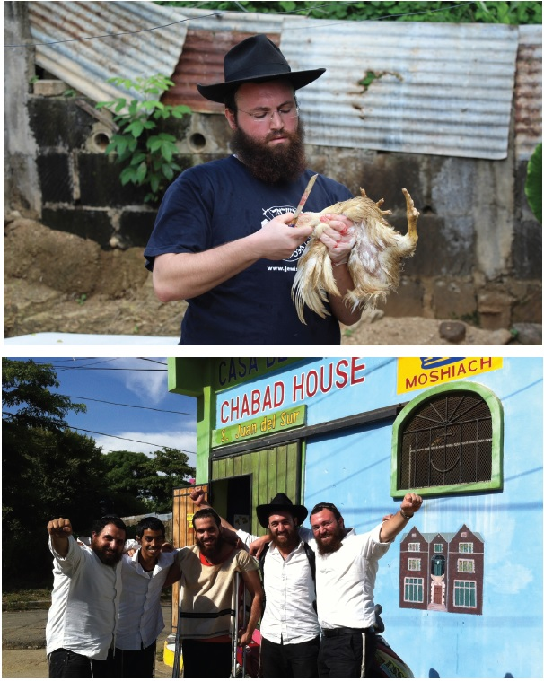

(בחלק הבא של הראיון שיפורסם בע”ה בקרוב - על עבודת הקודש של הרב מאנגל אצל הרבי, וההוראות שזכה לקבל מהרבי במהלך השנים)
כיצד זיהה ניסן מאנגל הצעיר את אחותו מעבר לגדר במחנה ההשמדה? איך הגיב הרוצח כשראה את היהודים מתכנסים בליל הסדר ושרים בצוותא? מהי תחיית המתים שחולל הרבי מה”מ לעם היהודי? וכיצד השפיע הקעקוע בידו של הרב מאנגל על חייו של סוחר ממנהטן? * הגאון החסיד הרב ניסן מאנגל משתף את קוראי ‘בית משיח’ בזיכרונות ועדויות
כיצד זיהה ניסן מאנגל הצעיר את אחותו מעבר לגדר במחנה ההשמדה? איך הגיב הרוצח כשראה את היהודים מתכנסים בליל הסדר ושרים בצוותא? מהי תחיית המתים שחולל הרבי מה”מ לעם היהודי? וכיצד השפיע הקעקוע בידו של הרב מאנגל על חייו של סוחר ממנהטן? * הגאון החסיד הרב ניסן מאנגל משתף את קוראי ‘בית משיח’ בזיכרונות ועדויות מתוך עמק הבכא, שחיים לנגד עיניו למרות שחלפו מאז יותר משבעים שנה * וְהַקָּדוֹשׁ בָּרוּךְ הוּא מַצִּילֵנוּ מִיָּדָם
ראיינו: הרב שלום יעקב חזן ואברהם רייניץ

לאחרונה יצא הרב מאנגל למסע ביקור במחנה המוות אושוויץ, ממנו ניצל בהיותו ילד מ”ילדי ד”ר מנגלה” ימח שמו. עם שובו מפולין הסכים הרב מאנגל לשבת לראיון מקיף עם ‘בית משיח’ ולשתף בקטעים מתוך סיפורו האישי המרתק והמצמרר.
אחותי מעבר לגדר
הרב ניסן מאנגל נולד בברטיסלבה בירת סלובקיה. לא שנים רבות ארכו שנות ילדותו המאושרות, שכן בהיותו כבן עשר שנים בלבד, כבשו הגרמנים ימ”ש את סלובקיה, ומשפחתו נלקחה למשרפות.
הם הובלו למחנה אושוויץ הידוע לשמצה, שם המתין להם כבר ד”ר מנגלה ימ”ש שערך את הסלקציה. עודו מעשן סיגר להנאתו החליט מי יישלח לחיים ומי למוות. “הייתי בן עשר שנים, קטן וצנום, אך אמרתי לו שאני בן 17 שנים. רק בנס הוא האמין לי וסימן לי להמשיך ביחד עם אבי לכיוון אלו שנשלחו למחנות עבודה, ולא להמשיך לעבר המשרפות”.
הרב מאנגל עבר באותן שנים, ששה מחנות מוות ועבודה, ובחסדי שמים מרובים - כמו מלאך פרש עליו כנפיו - שרד את כולן.
הזיכרונות שהוא נושא עמו, קשים ולא קלים: “באחד הימים נודע לי כי אחותי הגדולה נמצאת במחנה הנשים הסמוך. הגעתי לשם ולפתע שמעתי צעקה “ניסן”! לא זיהיתי אותה, היא היתה ללא שיער, לחייה צמוקות ונראתה רע. שאלתי “מי את?” והיא השיבה שהיא אחותי… לא יכולתי להאמין שזאת היא, ושאלתי אותה מה שם אביך? כשענתה נכון על השאלה, הבנתי שאכן זאת היא. נתתי לה מעט אוכל שהיה ברשותי, ובפעם הבאה הצלחתי להביא לה מעט נקניק בשרי.
מי שמע על נקניק בשרי באושוויץ? ומי שמע על אסיר שיכול היה להסתובב במחנה כרצונו? אם תספרו זאת לאסיר אחר, הוא יאמר שהדברים פשוט לא היו ולא נבראו. אני הייתי מנערי מנגלה, קבוצת ילדים שהוא בחר לניסויים החולניים שלו, וילדים אלו נחשבו במחנה למוגנים.
ליל הסדר שלא אשכח
“אין לשער מה היה באושוויץ”, חושף הרב מאנגל מעט מזעיר מאשר יושב בזיכרונו. “ייסורי איוב? - באין ערוך! ייסורי מצרים? - באין ערוך! במצרים לפחות כל המשפחה הייתה ביחד, היה להם מה לאכול, כפי שנאמר ‘הדגה אשר אכלנו במצרים’.
מאורעות רבים וקשים צרובים באש בזיכרונו של הרב מאנגל, ולכבוד חג הפסח, שיתף אותנו בסיפור אחד מני רבים שהיה עמו במחנות העבודה, בזכות חג המצות.
“פעם הועברתי למחנה ריכוז בשם מלק, בסמוך לעיר מלק שבאוסטריה. אי אפשר לשער מה עברנו שם. גם אינני רוצה להאריך בפרטים כי אינני רוצה לצער. אולם סיפור אחד מיוחד, מרומם את הנפש, אני רוצה לספר בהיותו קשור לחג הפסח:
באחד הלילות, כאשר חזרנו מעבודת הכפייה. אחד הנוכחים אמר: “הלילה זה פסח”. אין לי מושג מהיכן הוא ידע; אולי הוא היה רב שהחזיק איכשהו את חשבון הזמנים.
צריכים אפוא לערוך ליל הסדר.
מצה - אין
מרור - עד בלי די.
בשעה 10 בלילה היה כיבוי אורות ובשעה 4 כבר היו מעירים אותנו לעבודת פרך.
חזרנו לצריף בשעה 8.30 אחרי יום עבודה מפרך. היינו עייפים עד מוות. השרירים כולם דאבו, אבל צריכים לעשות ‘סדר’ פסח. ישבנו אפוא על הדרגשים והתחלנו ‘סדר’. כל אחד אמר קטע שהוא זוכר בעל פה מההגדה. אני הייתי ילד ואמרתי את ה’מה נשתנה’ בקול הילדותי שלי. בצריף היו 1200 אנשים, דחוסים כמו סרדינים.
“טאטע איך וועל בא דיר פרעגן די פיר קשיות”, אמרתי וכולם אחרי.
קושיה ראשונה, וכולם אחריי. קושיה שניה, וכן הלאה.
ידעתי בעל פה גם את ההלל, וכשהגענו לשם, אמרתי אותו בקול רם, וכולם אחרי. שרנו. כן, שרנו…
בסוף התחלנו לשיר “אני מאמין”.
אנשים שלושת–רבעי מתים, אבל שרים! שרנו את ההגדה.
פתאום התפרץ פנימה איש האס. אס. עם הרובה שלו. הוא נדהם. שרים? איך שרים? מאיפה החוצפה הזאת?! הוא כעס וצעק: תשכבו מיד לישון, אתם צריכים כוח כדי לקום לעבודה. אם אבוא עוד פעם אחת, ותשירו - אירה בכולכם!
שם במלק זו לא הייתה גוזמה, שם הרגו כמה שיותר יהודים, ומי שהרג - קיבל עוד מדליה. האיום שלו לא היה בגדר מליצה בלבד.
כולנו נבהלו ונשכבנו על הדרגשים.
הוא יצא.
לא חלפו ארבע דקות, וכולם קמו מהדרגשים והמשיכו לשיר את ההגדה של פסח. עברו 10 דקות, ואיש האס. אס. חזר. הפעם הוא כבר היה בכעס של רציחה. במו עיני ראיתי כמה פעמים כיצד ירו בשרשרת והרגו מאות יהודים בבת אחת. האמינו לי, כשאני דורך על נמלה, כואב לי יותר ממה שנגע להם שיהודי מת. הוא היה מלא כעס רציחה. הוא הניף את הרובה בחצי עיגול, וצרח בזעם: “אם תעשו את זה שוב, אהרוג את כולכם!”
הוא יצא. לא עברו 5–10 דקות, וכולם חזרו לשיר את ההגדה…
בינתיים הגיעה השעה 10, האור במחנה כבה ורק עששית קטנה האירה באור נוגה את הכניסה לצריף.
ממשיכים לשיר, והנה שוב הוא מגיע. הוא היה בכעס לא נורמלי. חרון אף ממש. הוא הסתכל מצד אחד של הצריף לצד השני, הביט ימינה, הביט שמאלה, כמה פעמים. כולם ידעו שכעת העונש הנורא בוא יבוא. שתיקת מוות שררה.
ואז פתאום הוא יצא כלעומת שבא. הוא לא עשה כלום.
המשכנו את ה’סדר’ עד השעה 4 בבוקר! - - -
באחת משיחותיו סיפר הרבי הריי”צ, שכאשר היה בהפצצות הכבדות בוורשה, היו שם במקלט הרבה יהודים, כולל מודרנים; חבר’ה שלא ידעו אפילו אידיש. לגמרי לא שייכים לאידישקייט. אבל כאשר היה ‘בום’ נורא מאחת ההפצצות - כך מתאר הרבי הריי”צ - כולם צעקו “שמע ישראל”. תמיד ידעתי שבכל יהודי יש ניצוץ אלוקי שאי אפשר לכבותו, אבל אף פעם לא ראיתי. אז, ראיתי!
מה שהרבי ראה שם במקלט באותם רגעים נוראים - אני ראיתי אז, בליל הסדר. בין 1200 היהודים שהיו בצריף, כמה מאות מתוכם היו לא–דתיים. על פי דרך הטבע הם היו צריכים לצעוק עלינו ולומר: פאנאטים, אתם רוצים לסכן את עצמכם? - תצאו החוצה ותעשו שם את ה’סדר’. תסכנו את החיים שלכם, ולא על חשבוננו! זה החיים שלנו!
אבל אף אחד לא אמר מילה, להיפך. הם עצמם הצטרפו בלי פחד!
זו הייתה סכנת חיים אמיתית, אבל אנשים המשיכו מתוך התעוררות אמיתית של הנשמה. זה היה ממש מסירות נפש!
סופו של מלשין
בשולחן ערוך של אדמו”ר הזקן, מופיע פסק הלכה מעניין, הקובע כי גם בזמן הזה, ‘מוסר’, כלומר, מי שמלשין ומוסר יהודים לשלטונות - חייב מיתה. בהקשר לכך צרוב בזיכרוני המקרה הבא:
בשלב שעוד היינו בפרשבורג והתחבאנו מהנאצים, היה שם ‘מוסר’ שמסר יהודים שהצטיידו בתעודת זהות של גויים. כאשר היה נודע לו על יהודי כזה, הוא היה מודיע לאס. אס. והם היו מסיימים את “המלאכה”. כאשר ראינו אותו מרחוק, רעדנו, שלא יזהה אותנו.
בסופו של דבר, הנאצים תפסו גם אותנו ושלחו אותנו לאושוויץ. כולל גם אותו.
אותי ואת אבי שלחו לצריף. על כל דרגש שכבו שלושה אנשים. אני שכבתי ראשון, כי לא רציתי שהנאצים יראו את אבי ואחריי שכב אבי.
בשעה עשר בלילה, כבו כל האורות. חצי שעה אחר–כך הגיעה קבוצה של 10–15 אנשי זונדרקומנדו (יחידה מיוחדת של אסירים יהודים שאולצו על ידי הנאצים לטפל בהוצאת הגופות מתוך תאי הגזים ושריפתן במשרפות). הם קראו בשמו של ה’מוסר’ והורו לו לצאת לעברם. הוא צעד לעברם, ואז החלו להכות אותו מכות נמרצות, כשהם צועקים עליו: “אתה הלשנת על כל כך הרבה יהודים ושלחת אותם לאושוויץ!” כך היכו אותו עד שהוא מת. אחר–כך חפרו בור ליד הצריף וקברו אותו, כדי שאנשי האס. אס. לא יידעו מכך. הוא היה הראשון שנהרג שם מכל הקבוצה…
עד היום הזה אין לי מושג מהיכן הם ידעו שהוא ‘מוסר’, אבל זה מה שראיתי.
נזכרתי בסיפור הזה כשהגעתי להלכה שכתב אדמו”ר הזקן בעניין ה’מוסר’. אפילו אדם שרצח בוודאות, אין לו בימינו דין מוות, מה שאין כן ‘מוסר’ - גם בימינו נפסקה לו מיתה.
גבורה יהודית טהורה
לא מזמן היה הרב מאנגל במסע לפולין עם האדמו”ר מבויאן ומאות חסידיו (ראה מסגרת). בין השאר ביקרו במקום שנקרא פלשוב, לא הרחק מקראקא, שם נרצחו אלפי יהודים שנקברו בקבר אחים.
הרב מאנגל עמד שם כשמסביבו מאות החסידים, ובסמוך לו האדמו”ר. הם ביקשו ממנו שיספר משהו, והרב מאנגל, בנועם לשונו, פתח: “אדבר על קידוש ה’ ועל מסירות נפש של יהודים באושוויץ. אנשים חושבים שמי שהגיע לאושוויץ איבד את האמונה, אספר לכם אפוא כמה מקרים שראיתי ושמעתי מכלי ראשון:
כשהייתי באושוויץ, כאמור, הייתי הראשון בדרגש, אחריי שכב אבי, ואחריו הרב של פרשבורג, יהודי בשם שרייבר, נכדו של החתם סופר. הוא היה יהודי עדין מאוד ותלמיד חכם גדול.
בכל יום היו נותנים לנו חצי פרוסת לחם, שרובה כבר הייתה מעופשת, וקצת ‘מרק’, שלא היה אלא מים חמים ובו כמה שעורים, וכן חתיכות דקות של בשר סוסים. הרב שרייבר סירב לאכול מזה.
אבי אמר לו: “הרב של פרשבורג, זה פיקוח נפש”. הוא אמר: “אני לא יכול”. אבי לא הרפה ואמר: “הרי זה דוחה כל התורה כולה”. אבל הוא בשלו: “אינני יכול”. אמר אבי: “הרי לא כתוב רק ‘דחויה’, אלא ‘הותרה’. זה ממש מותר”, והוא בשלו: “אני יודע את כל זה, אך מה אעשה, ואינני מסוגל!” והוא אכל רק את הלחם המעופש בלבד.
אחרי שבועיים או שלושה הוא נפטר.
אמרתי לאדמו”ר מבויאן: הוא היה יהודי צדיק. הוא לא אמר “אסור לי”, אלא “אינני יכול”. נתתי משל: אם יש מצב של פיקוח נפש, האם אתה יכול לאכול אבנים? ברור שלא. בשבילו זה היה ממש “לא יכול”. אמרתי שזהו על דרך הדרגה של משה רבינו; כאשר הקב”ה אמר למשה ‘רד העד בעם פן יהרסו לעלות’, אמר משה ‘לא יוכל העם לעלות’. מה זאת אומרת ‘לא יוכל?’ הרי הם כן יכולים… אלא שבדרגה של משה, כאשר אסור - זה אי אפשר!
אני רוצה לספר סיפור נוסף, אמנם כבר די ידוע, אך אני יודע עליו מ’כלי ראשון’; שמעתי את זה בעצמי מאיש הזונדרקומנדו שהיה נוכח שם: כאשר שלחו את האמהות לתאי הגזים, אם היה שם גם תינוק, היו שולחים לשם את שניהם. אבל באכזריותם הרבה, לא התירו לאמא להיכנס למות יחד עם התינוק, אלא הפרידו ביניהם.
הייתה אמא אחת, שאיש האס. אס. דרש שתמסור לו את התינוק. היא לא רצתה. היא דרש שוב, ואז היא אמרה לו: “תביא לי את הסכין שיש לך בקת הרובה”. הוא חשב שהיא רוצה להרוג בעצמה את הילד, ונתן לה את הסכין בשמחה. היא הניחה את התינוק על הרצפה ועשתה לו בו במקום ברית מילה, ואז אמרה: “רבונו של עולם! נתת לי ילד, ואני מחזירה לך אותו כילד יהודי”. זה ממש כמו חנה ושבעת בניה!
לקראת סוף המלחמה, כשהיטלר ימ”ש הרגיש שהוא מפסיד את המלחמה, הוא רצה לנצח לפחות במלחמה אחת - ביהודים. הנאצים החלו אפוא להגביר את המשלוחים למחנות המוות. היו ימים שהגיעו עשרים אלף יהודים ביום אחד, ביניהם גם הרבה ילדים. תאי הגזים והתנורים פשוט לא עמדו בעומס. מה עשו? לקחו את הילדים וסגרו אותם בצריף עד שיתפנה מקום בתאי הגזים והתנורים. בכל צריף היו כאלפיים ילדים.
היה שם אבא, שבנו היה בתוך הצריף. הוא הגיע לקאפו, השומר של הצריף, וביקש להוציא את בנו בהבטיחו לשלם. הוא אמר שישלם לו בשיני זהב. הקאפו הסכים, אבל אמר שמכיוון שהאס. אס. יודעים בדיוק כמה ילדים ישנם שם, ואם יראו שיחסר אחד - יהרגו אותו. לכן, הוא מוכן להציל את בנו, אבל במקומו ייקח ילד אחר. האבא שמע זאת ולא הסכים. “לא אציל את בני על חשבון ילד יהודי אחר!” וזאת על פי ההלכה שאין נוטלים נפש מפני נפש.
בסופו של דבר האבא השאיר את בנו, והוא נהרג על קידוש השם. זה היה ממש כמו עקידת יצחק. האבא יכול היה להציל את בנו, ולא הצילו כי כך אומרת התורה!
אחרי שסיפרתי את שלושת הסיפורים הללו, הרבי מבויאן כבר לא יכול להמשיך לשמוע…
על הפסוק “וַיְהִי הַשֶּׁמֶשׁ בָּאָה וַעֲלָטָה הָיָה וְהִנֵּה תַנּוּר עָשָׁן וְלַפִּיד אֵשׁ אֲשֶׁר עָבַר בֵּין הַגְּזָרִים הָאֵלֶּה”. מהו ה’תנור אש’? מהתורה אנחנו מכירים את הלשון ‘כבשן האש’ ומדוע כאן כתוב לשון כזו מוזרה ‘תנור אש’? אני חושב שזה מרמז על התנורים של אושוויץ. בבחינת “ליכא מידי דלא רמיזא באורייתא”. זה היה תנור אש; ולפיד האש היה זה שיצא מן הארובות יחד עם העשן השחור. מרוב עוצמת האש, היא עלתה עד לגובה העשן… כל השמים היו שחורים.
היה שוחט חסידי, שכאשר הגיע למחנה עם אנשי קהילתו ושלחו אותם לתאי הגזים, פנה אליהם ואמר: בואו נשיר, נכנס לתאי הגזים, ונקבל פני משיח. הם נכנסו בריקוד. זה היה גיהנום, אבל היו בטוחים שמיד מגיעים להיכל של משיח!
סוד הגלגולים
אספר לך משהו: בשנת תשל”א הזמינו אותי להרצות באוניברסיטה של ניו יורק. בין השאר היו שם גם סטודנטים מארץ ישראל שלמדו במגמת פילוסופיה. אני סיפרתי להם על הניסים שראיתי שם במחנות המוות. כל מי שניצל, זה היה ניסי ניסים. הם לא קיבלו את דבריי והקשו: “אבל מה עם אלו שנספו ולא ניצלו?” ביארתי להם את העניין על פי סוד הגלגולים, על יסוד דברי אדמו”ר הצמח צדק, שהגזירות האיומות שהיו על עם ישראל - זה היה עונש לנשמות מזמן בית המקדש שבאו בגלגול.
הסטודנטים כולם קיבלו את זה, מלבד הסטודנטים מארץ ישראל שצחקו. בפועל, כל כך נהנו מההרצאה, שביקשו הרצאות נוספות שהפכו לסדרה של עשר הרצאות.
בהשגחה פרטית, שבוע או שבועיים לאחר מכן, הרבי דיבר על השואה באחת משיחות קודשו, ושאל: מילא הנשמות, היה להם תיקון. אבל למה לגופים היה צריך להיות צער?
בעקבות זאת כתבתי לרבי מה שניסיתי לבאר את העניין על פי עניין הגלגולים, וכתבתי שזה ההסבר היחיד שמצאתי, והוא אף התקבל על ליבם של השומעים. שאלתי את הרבי האם ההסבר שאמרתי, נכון?
על מה שכתבתי שההסבר התקבל על ליבם, כתב הרבי: כיון שמאמינים ב[סוד הגלגולים].
ובהמשך לכך כתב מדוע הוא עצמו לא ביאר כך בשיחה: ועפ”ז צ”ל [ועל פי זה צריך לומר] שבכל דור השואה לא היתה אף נשמה חדשה אחת! כן יוקשה מיסורי אדה”ז [אדמו”ר הזקן]. ועוד. ולכן לא הזכרתי זה (אף שרמזתיו בהזכירי שאלת משה - ברכות ז, א (ראה שערי זוהר לשם) - ושע”פ [ושעל פי] שכל - נמצאת הנשמה גם קודם לידת פ’.
ועל שאלתי אם ההסבר הוא נכון, כתב הרבי: בכלל (ראה ש’ זוהר - שם ולב”מ קז, א).
צל המוות בצעדה האחרונה
המלחמה נגד הגרמנים הלכה וצברה תאוצה. בנות הברית נלחמו בהם בחזיתות השונות במאבק עיקש, עד שהצליחו לשבור את חומת הפלדה הגרמנית.
הרוסים החלו להכניע את הגרמנים בחזית שלהם, והתקרבו אט אט לכיוון גרמניה. כשהגרמנים ראו את תבוסתם, החלו בצעדות המוות הידועות לשמצה. המחנה בו שהה הרב מאנגל באותה תקופה, חולק לשניים. “הבנתי שהבריאים יותר נמצאים בטור אחד, וכל השאר בטור השני”, מספר הרב מאנגל. “אני הייתי בטור הלא–נכון. בהזדמנות הראשונה קפצתי לטור הראשון. חשבתי שאף אחד לא ראה בכך, אך אחד השומרים האוקראיניים שם לב, והוא היכה אותי מכות נמרצות והחזיר אותי לשומר אס. אס. שזרק אותי בחזרה לטור השני. ידעתי שזה מאבק על החיים, ולא התייאשתי. קפצתי פעם נוספת לטור הראשון, והפעם איש לא הבחין בכך.
במשך ימים שלמים צעדנו לכיוון גרמניה. לא נתנו לנו אוכל והסתפקנו בשלג שהרמנו מהאדמה. אם מישהו מצא משהו מהדרך כדי אכילה, זה היה חג. בשלב מסוים הרגשתי שכוחותיי אוזלים. ביקשתי מהיהודי לצדי שישים לב היכן אני מתמוטט כדי שיוכל לומר לבני משפחתי היכן מקום קבורתי, וכן כדי לזכור את היום על מנת שיידעו מתי היארצייט שלי, אך הוא לא ויתר לי אמר שהוא לא ייתן לי למות. הוא עזר לי לצעוד ככה במשך מספר ימים עד שהגיעה הישועה”.
הרב מאנגל, אמו ואחותו שרדו את השואה הנוראה. בסרטי הוידאו שצילם הצבא האדום, היא נראית נישאת בידי אחות רחמניה, כיון שלא יכלה לעמוד על רגליה.
תחיית המתים המופלאה שחולל הרבי
למרות כל הסיפורים הקשים הללו, הרב מאנגל מתעקש להסתכל על העולם של ימינו בפרספקטיבה חיובית. “הייתי עכשיו בפולין וראיתי המקום שנרצחו בו שישה מיליון יהודים. כשיצאתי ממחנה ההשמדה, אמרתי לסובבים שהנה זו ‘תחיית המתים’. תחיית המתים בגשמיות תתרחש אמנם רק לעתיד לבוא, אבל תחיית המתים ברוחניות זה כבר נעשה”.
הרב מאנגל מוסיף ומסביר: “אחרי המלחמה הגעתי לקנדה כפליט, ללא שום ניירות מסודרים. בשנת תשי”ב זכיתי להגיע לרבי לראשונה. באותה תקופה בערך, קרה המקרה הבא:
באחד הימים נכנס הרבי כמו בכל יום לחדר המזכירות לקחת משם את המכתבים שהגיעו. כאשר הרבי נכנס למזכירות, נכנסה לשם אשה שבכתה: ‘רבי, הצל את בני!’ הרבי התעניין מה קרה והיא סיפרה כי בנה היה מעורב בתאונת דרכים קשה, הרכב התרסק לחלוטין וזה ששה חודשים שהבן שלה ב’קומה’. שום דבר לא עזר לרפאותו. וגם הרופאים התייאשו.
כשהרבי שמע זאת, הורה לאחר מכן לאחד המזכירים לקרוא פנימה בחור. כאשר הבחור נכנס, אמר הרבי ‘לך לבית רפואה, ואמור לחולה באוזנו את שמו של כ”ק חותני (האדמו”ר הריי”צ) ותחזור ותעדכן אותי מה קרה.
כאשר הגיע הבחור לבית הרפואה, לא נתנו לו להכנס לחדרו של החולה. הוא ביקש והפציר רבות, ובסופו של דבר האמא של החולה ביקשה מהרופאים, והשיגה את הסכמתם לכניסתו. הלה קיים את הוראת הרבי, אמר את שמו של הרבי הריי”צ באוזני החולה, אך לא היה ניכר שום שינוי.
הוא חזר לרבי ודיווח כי עשה את המוטל עליו אך לא ראה שום שינוי. הרבי הגיב בפליאה: “לא ייתכן! לך שוב, ואמור שוב את שמו של כ”ק מורי וחמי אדמו”ר”. הבחור הלך שוב, וכאשר אמר את השם, ראה שהריסים זזים מעט. ששה חודשים שכב החולה כמו צמח, ללא כל תזוזה, והנה התזוזה הראשונה. הוא חזר לרבי ועדכן. הרבי אמר לו: “תלך לשם מדי יום, ותאמר את שמו של הרבי הריי”צ, עד שיהיה בריא לגמרי”.
הלה עשה כמצווה, ובפעם הבאה העפעפיים החלו לזוז. כך לאט לאט החל לקום, עד כדי כך שקראו לו בבית הרפואה “הבחור בעל המופת”… לבסוף החולה הבריא לגמרי.
זה היה ה’מופת’ הראשון ששמעתי אודות הרבי כאשר הגעתי לראשונה ל–770 בשנת תשי”ב.
זהו הסיפור, אך יש גם את תוכן פנימי לסיפור: הרבי לקח על עצמו את הנשיאות מיד לאחר השואה. עם ישראל היה אז במצב של ‘קומה’. אחרי כל כך הרבה של רוע ואכזריות, אנשים רבים התקשו להאמין בקב”ה וללכת בדרכי תורתו. לא זו בלבד שהעם היהודי איבד שליש מבניו - גם רבים מהפליטים חדלו להאמין.
ידוע שהשכינה נקראת ‘אמא’. ואולי אפשר לומר, שהשכינה הקדושה הגיעה לרבי, וביקשה: “רבי, הצל את בני! עם ישראל”. והרבי החל לקרוא בקול גדול, ויהודים החלו להתעורר לתשובה ולמצוות. באמצעות השלוחים הציל הרבי את עם ישראל.
בלי הרבי, לא היה היום זכר לעם ישראל. הרבי חולל תחיית המתים ברוחניות.
במשך השנים הגעתי לאוסטרליה כמה פעמים לשם מתן הרצאות. רבים מפליטי השואה התיישבו באוסטרליה הרחוקה, לאחר שאמריקה וארצות אחרות לא הסכימו לקבל אליהן פליטים. אוסטרליה בהיותה יבשת ענקית, קיבלה בשמחה את כולם. הגיעו לשם פליטים מפולין ומהונגריה, והתיישבו שם.
זכורני שהיה שם יהודי אחד, שומר מצוות בעברו שירד והתרחק לגמרי מדרך התורה והמצוות. הוא לא האמין בכלום. הוא התיישב באוסטרליה מפני שרצה לברוח מהקב”ה כמה שיותר רחוק וזה המקום הכי רחוק שהוא מצא. שאלתי אותו: “הצלחת?” הוא השיב בכנות: “לא. מה אעשה? רציתי לברוח, אבל הרבי באמצעות השלוחים מושך אותי חזרה”…
זוהי עבודתו של הרבי - להציל מאות אלפים! הרבי לא נתן לאומללים אלו לברוח.
זה תחיית המתים ברוחניות.
המספר שזעזע
לפני זמן לא–רב, יצאה קבוצת חסידי בויאן מארה”ק, בראשות האדמו”ר מבויאן למסע בקברי צדיקים באירופה, ובין השאר ביקרו במחנה השמדה, שם פגשו את דמותו ההדורה של הרב ניסן מאנגל.
באחת התמונות שצולמו באותו אירוע, נראה הרב מאנגל עומד בין החסדים, ומניף את ידו השמאלית, וחושף את המספר שחקקו הנאצים ימ”ש על זרועו.
הרב מאנגל ניאות לספר ל’בית משיח’ על מה שעומד מאחורי התמונה הלא–שגרתית הזאת:
לפני עשרות שנים, ביום שישי אחר הצהריים, הלכתי עם רעייתי למדידות עבור הסירטוק החדש שהזמנתי אצל החייט, שתפר גם את הסירטוקים לרבי; הלה התגורר באיסט–סייד שבמנהטן. בדרך עברנו את איזור אורצדט סטריט, שם מכרו “מציאות” - בגדים איכותיים במחירים טובים. כשעברתי במקום, הגיע בעל חנות מקומי, יהודי, והניח יד על כתפיי, ואמר: “איש צעיר, יש לי חולצות יפות במחיר מצויין. היכנס לחנות ותבחר לעצמך משהו טוב”. אמרתי לו: “אני רוצה חולצות, ובוודאי במחיר טוב, אבל לא עכשיו”.
“למה לא עכשיו?” לא הרפה.
“כי כעת ערב שבת”, אמרתי.
“אתן לך חולצות במחיר ממש זול”, הוסיף הלה. “וכי בשביל שבת אתה תפסיד מציאה כה טובה?
אמרתי: “כן”.
הוא התחיל לעשות צחוק מהשבת. “מה אתה מאמין בשבת? אתה מאמין בכלל בתורה? מאמין בקב”ה?” השבתי בחיוב.
כשהמשיך לעשות צחוק מהתורה והמצוות, אמרתי לו בכאב: “אתה הרי יהודי, איך יהודי יכול לדבר כך על הקב”ה, ועל התורה והמצוות?”
“איש צעיר”, קולו התרצן פתאום, “אם אתה היית רואה מה שאני ראיתי, אם אתה היית חווה מה שאני חוויתי, אם אתה היית עובר בחייך מה שאני עברתי בחיי - היית מדבר בדיוק כמוני”.
אמרתי לו: “אדם יקר, מה ראית שלא ראיתי? מה חווית שלא חוויתי?”
הוא הרים שרוולו והראה לי את המספר החקוק על ידו, ואמר: “אני הייתי באושוויץ, ומי שהיה באושוויץ, לא יכול להמשיך ולהאמין”.
“בן כמה היית באושוויץ?”
“כבן 22 שנה”.
הפשלתי גם אני את השרוול שלי והראיתי לו את המספר שעל ידי. “הבט כאן”, אמרתי, “אני הייתי בן עשר שנים בלבד! אני עברתי ששה מחנות השמדה! ואני עדיין מאמין בקב”ה ובשבת!”
כשהוא ראה את זה, הוא החוויר לגמרי, מזועזע לחלוטין. מבלי אומר נכנס לתוך החנות שלו, התיישב בכיסאו שבמשרד הפנימי, וחפן את ראשו בשתי ידיו. רצתי אחריו מתוך מטרה להמשיך לעורר אותו על חשיבותה של השבת, אבל לא היה עם מי לדבר. הוא היה מזועזע לגמרי. בהלם של ממש.
אשתי לחצה עלי: כבר מאוחר, עוד מעט שבת כדי להגיע חזרה לביתנו, היינו צריכים לקחת שלושה אוטובוסים. החלטתי אפוא שאגיע בהזדמנות אחרת ואמשיך לשוחח איתו.
חודשיים או שלושה אחר–כך, הלכתי שוב לאותו רחוב ורציתי לגשת אל חנותו כדי להמשיך את שיחתנו, וגם כדי לקנות ממנו כמה דברים. נכנסנו לחנות, והוא לא נמצא. היה שם בעל הבית חדש. שאלתי את המוכר, היכן המוכר הקודם? והוא השיב לי: הלה מכר לי את העסק, כי יש כאן תחרות מאוד גדולה, ולא שייך להיות כאן עם חנות שסגורה בשבת. הוא מכר אפוא את החנות ועבר לשכונה אחרת כדי שיוכל לשמור שם שבת!
עם המספר הזה שקועקע בידי - הטעים הרב ניסן מאנגל באוזני מאות חסידי בויאן בלבו של מחנה המוות, שעה שהציג לראווה את המספר - החזרתי יהודי בתשובה!
(בחלק הבא של הראיון שיפורסם בע”ה בקרוב - על עבודת הקודש של הרב מאנגל אצל הרבי, וההוראות שזכה לקבל מהרבי במהלך השנים)